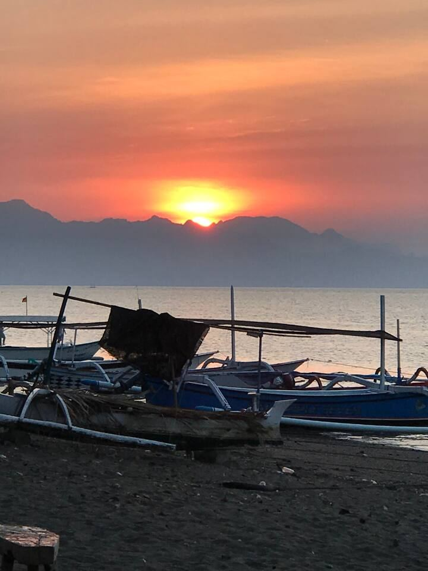
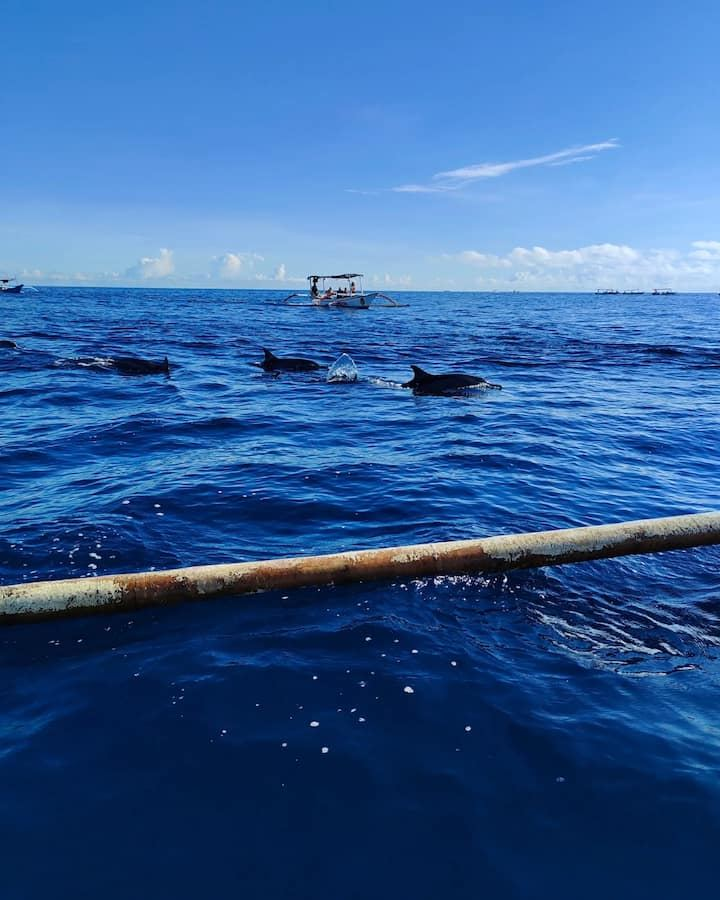
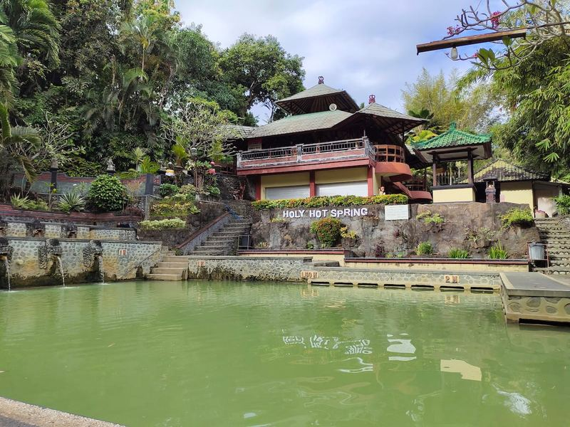
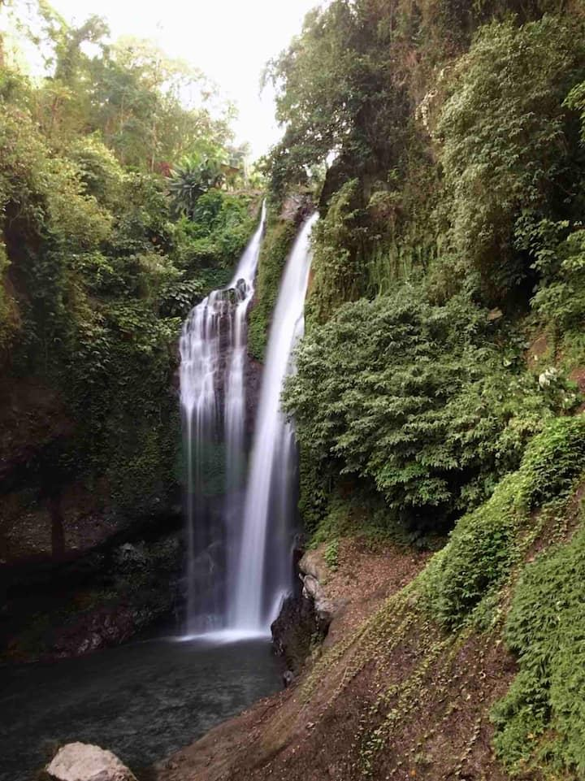

Lovina · Singaraja · North Bali
Sea, springs and waterfalls.
(01) Where we are
Annie’s Villa is on Jalan Laviana in Banyualit, Kalibukbuk, in Lovina, Singaraja, on the north coast of Bali.
A quiet coastal town with friendly people. The market, the mountains and the beach are all close.
(02) Around Lovina
Dolphins, hot springs and hills.
Tours and day trips are arranged and priced separately. We tell you the price before you pay.

Sunsets on the beach
Lovina’s beaches have dark sand and wooden fishing boats. The sun sets over the sea.

Dolphins at dawn
Boats go out early in the morning to look for dolphins at sea. Ask us about a trip.

Hot springs
The Banjar hot springs are west of Lovina, with warm pools in a green garden.

Waterfalls in the hills
Gitgit, Aling-Aling and Sekumpul are among the waterfalls in the hills behind Lovina.
(03) Getting here
Find us, or let us collect you.
- Address
- Jalan Laviana No. 8, Banyualit, Kalibukbuk, Lovina, Singaraja, BaliOpen in Google Maps
- Airport pickup
- Arranged on WhatsApp, about IDR 600,000
- Check-in
- From 14:00
- Check-out
- By 12:00
- Tours and day trips
- Arranged and priced separately. We tell you the price before you pay.